I’ve been asked to provide an update to how the EFI project is going.
In a nutshell, it hasn’t gone anywhere at all since my last update. The bike has been parked at a friend’s house for the last 3 years – he needed a bike to ride whilst his was being fixed. Luckily for me, he starts it up and lets it run for 5 or 10 minutes every 6 months or so. Luckily for him, he has very understanding neighbours!
Overall, the EFI is running too rich – dropping the amount of fuel by about 10% should sort that out easily. The MegaTune software that I was using allows you to do that quickly and easily. (It’s a simple matter to change the ‘ReqFuel’ variable or the injector open duration. From memory, it’s currently set to 5.5 milliseconds. Dropping to about 4.9 should sort things out.)
Around town, it’s not that good – it doesn’t want to idle properly, and the quick-action throttle makes it difficult to open the throttle a small amount. The revs surge up and drop back until repeatedly until they fall too low for the engine to run (and then it stalls). I had to reach down to the throttle bodies and manually turn cable attachment by hand. Even then it’s a tricky job to get it right.
I think that could be fixed by redesigning the throttle stop so that the throttle is held open a little bit more, and perhaps a bit of a tweak to the lower-end of the fuel map.
Once you get moving, it’s fantastic. Not a lot of power below about 5,000 RPM (kind of like the stock CBX). Once you open it up, however, it’s a different story. The tacho needle rips towards the redline at a great rate of knots, the exhaust howls in your ears, and the horizon leaps at you.
I didn’t get a dyno run, and I really wish I had. A ‘before’ and ‘after’ comparing the carbs to the EFI power output would be fantastic to see. I estimate that the carbs were giving me about 80 to 85 horsepower at the rear wheel, and the EFI is easily more than that.
Wow…. 8 months without an update.
OK, I got Raven on the dyno and a wide-band O2 sensor stuck into her exhaust pipe. (Ooops, sounds a bit rude doesnt’ it?) Anyway, 2 hours later, I had a working fuel map.
It’s a bit different to what I was expecting to see – the bottom half was running way too lean, and the upper half was way too rich. Although I think that the bottom end could do with leaning out a fraction now.
The downside to all this is that Raven has been parked under a cover since about Easter. Now that the EFI project is proven to work (and is working fine!) I no longer have the motivation to finish the job (and fix the blasted oil leak, along with getting the exhaust valve guides replaced). I’ve ridden her a few times over the months, and she is a fun thing to hoon around on, but the “fun” has gone out of owning her.
Perhaps it’s time to find a new owner for her….
I haven’t been doing much on the bike lately, I’ve had too much other stuff to worry about. I’ve leaned the fuel map out a bit here and there, and it seems to run a lot better. I still think it’s running far too rich, but we’ll have to wait and see.
The big news is that I have Raven booked in for some serious dyno time down at MegaCycle. With a wide-band O2 sensor, I should be able to get the fuel map pretty well sorted out without too many hassles. The advantage of working on the dyno is simple – I can hold the bike at a constant RPM and throttle position and get the map sorted out. No need to try and extrapolate backwards from datalogs, no need to try and remember what’s happening as I’m riding, no need to watch out for cars.
The only worry I have at the moment is that she’s burning oil (and a reasonable amount of it), and that’s what’s killing my O2 sensor. I don’t really want to kill Ken’s WB sensor.
I’ll let you all know how things turn out…
Hmmm…. Yes. Time for an update.
Speed-Density is dead! Long live Alpha-N! Yes, I have switched algorithms, and let me tell you, it’s much better now.
I have the fuel map mostly sorted out (I hope! Now, where have I said that before?) for most of the lower half of the RPM range. Cruising at about 80km/hr in top gear is smooth as silk. It’s still running a bit rich (going by the seat-of-the-pants) past about 1/2 throttle or so, which makes the engine sound rather lumpy and rough. Cold starting is interesting, it takes a couple of goes to get the engine to fire and continue running. Once it’s running, though, and past that first 20 seconds of coughing and farting, it idles quite well.
One thing that I have noticed is that I have to change my riding style. No more can I come into a corner one gear too high and rely on the bike to slowly accelerate. I have to come into the corner in the right gear, at the right engine speed and accelerate smoothly away – if I don’t, it just bogs down and goes nowhere as I open the throttle. Whether this is due to the incomplete tuning (including those pesky Acceleration Enrichments) I haven’t been able to tell yet.
I’m beginning to have my doubts about the EGO sensor, too. It seems to want to indicate that the engine is running very rich, even when it’s one touch away from stumbling because it’s too lean. I guess that if worst comes to worst, I can always disable it and simply run in open-loop mode.
Oh boy…. This EFI tuning is a lot harder than the manual made it out to be. Mind you, the manual is aimed at car drivers who are able to have a co-pilot handy to do the on-the-fly tuning. Us bike riders have a bit more trouble when it comes to tuning whilst moving.
To cut a long and painful story short, I think I have the base fuel map down pretty well. There are a few mild stumbles when keeping a constant throttle, but some datalogging and some thought should be able to sort something out. A session on a dyno is on the cards, too. Preferably one that has a wide-band Exhaust Gas Oxygen (EGO) sensor handy.
I just wish I had a working speedo – then I could see just how fast she does accelerate with the right fuel amounts and a healthy dose of acceleration enrichment enabled.
A word of advice here – if your fuel calculator says put in ‘X’ amount, then put in ‘X’ amount! Don’t piss around trying to think you can out-smart it. You can’t.
Ah yes, datalogging. I have a borrowed Palm Pilot that can act as a datalogger, I just can’t get the data out of it! So it looks like I might have to strap my laptop to the bike somehow and go for a spin. I’m really not looking forward to doing that. Of course, having the laptop present means I can make quick adjustments on the side of the road. Hopefully.
If you do use hacked up throttle bodies, like I did, you’ll need a little stopper to hold the butterfly valves open slightly at idle. Otherwise your engine will not run. You can quote me on that, if you like. grin See the picture below.
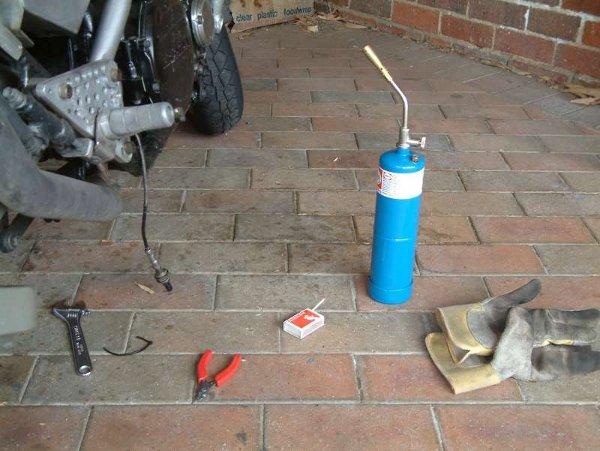
How to clean your Exhaust Gas Oxygen sensor – a careful burning with a blowtorch. Just be careful not to get it too hot.
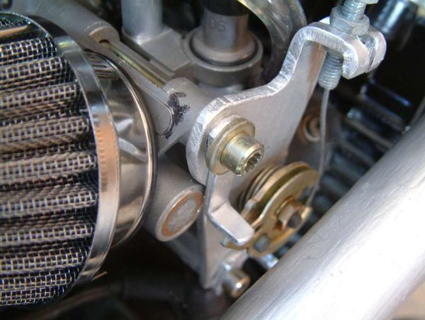
Yet another bracket – this time to hold the throttle slightly open.
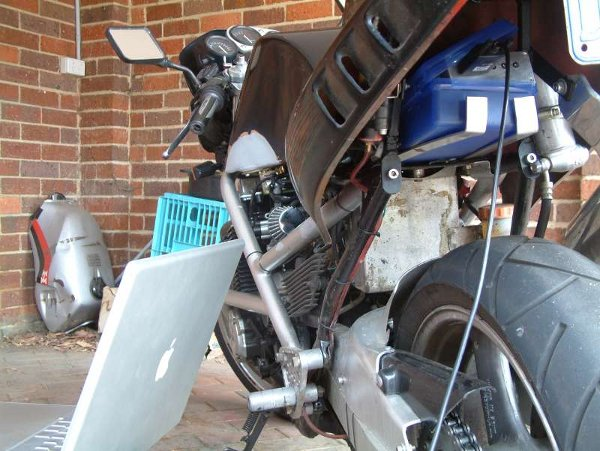
It’s not elegant, but it works – although I got tired of plugging that cable in all the time.
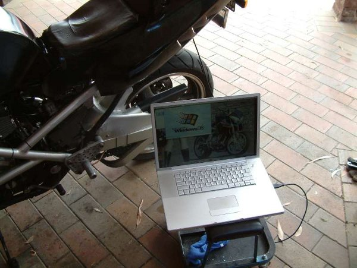
The tuning software is Windows-based, so I have to run VirtualPC on my Apple laptop.
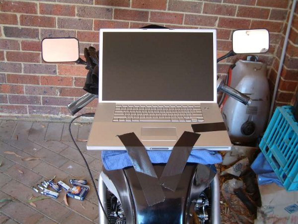
Datalogging, the hard way. Maybe I need a smaller laptop….
I picked up the tank from Mick on Friday evening. I must say that Frank is a damned good welder – the work was absolutely perfect. OK, the paint got ruined in a reasonably sized area, but I knew that was going to happen anyway.
I spent last night cleaning up the burnt paint, and discovered that someone had put a layer of body filler about 1mm thick all over the tank at some stage in the past. I guess this explains why the surface was so smooth. Anyway, I got the wire wheel out, and used the power drill to scrape back the burnt paint and body filler, all the way down to bare metal. Once it was cleaned up, I put a good coat of primer paint on.
Today, I cleaned up the primer and put a second coat on. I don’t really want this tank to rust. It will be a cast-iron bitch to get another one…
I really, really need to thank my friend SteveL, too. He dropped around this afternoon, and was instrumental in helping me getting the bike running. His enthusiasm and problem solving skills are pretty well second to none.
Together, we put the tank back together (installing the filler cap is a prick of a job), then went about problem solving why the bike didn’t want to run. First, there was a kink in the petrol line from the pump to the fuel rail. Then, the injectors weren’t passing fuel.
We eventually found out that the injectors were clogged with gunk and not opening! Bah! Humbug! Luckily, we were able to carefully press the injector pintle back with a small screwdriver. We’re talking less than a millimetre here, by the way! Working the pintle back and forth a few times seemed to work, as we started to get fuel into the inlet manifold. A few more moments of cranking, and the bike coughed, farted and roared into life!
I can’t really describe how I felt… I am very happy that everything was working at long last, but depressed in knowing that I have a huge amount of work in front of me getting it tuned properly.
Overall, a great day today!!
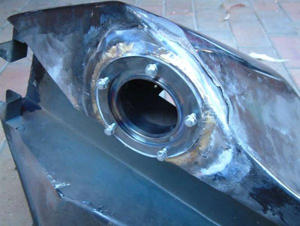
The tank as I got it back from Frank, burnt paint and all.
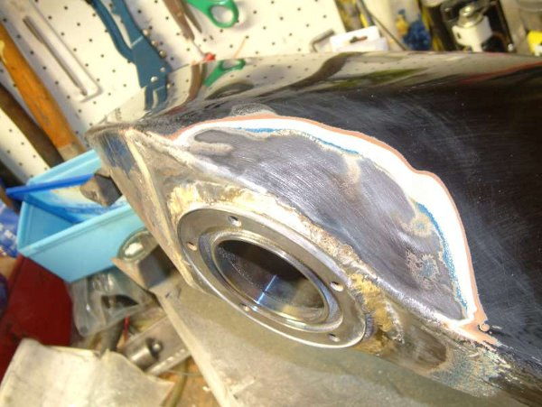
A bit of cleaning and polishing later…
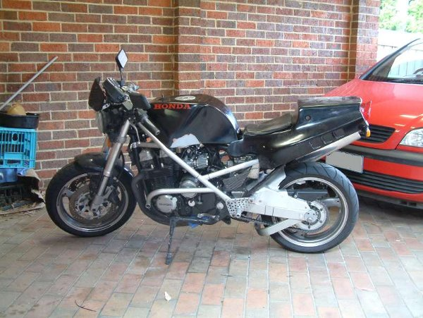
All back together again, and ready for tuning.
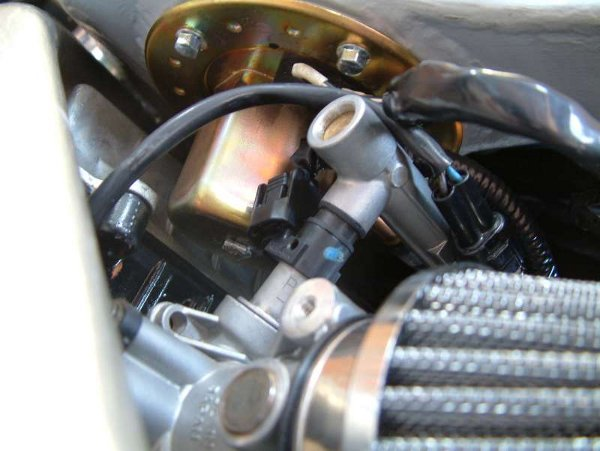
A strange view of the pump, showing it’s base and mouniting bolts.
An MPEG movie (MP4 format) showing the bike starting and running.
It’s all coming together now! I spent a good part of my Christmas break taking care of all the wiring the project needs. I ended up running something like 24 or 25 wires from pretty much one end of the bike to the other. The scary part is that it all works. Watch out for hot soldering irons – they tend to produce very nasty burns before you even notice. It’s been about three weeks, and it’s almost healed now.
Mick never got a chance to weld my tank together before Christmas, but he and Frank have been working on it the week. I saw it today on my way home from work, and it’s going to look very sweet when it’s all welded together. I’ll have to clean all the metal filings out of the tank, and repaint it, but those are small prices to pay.
If everything goes according to plan, I’ll have a go at getting the bike started sometime next week when I’m on leave from work. I expect that it will take some convincing to start, as the CBXs are always a bit cantankerous about starting after they’ve been sitting for some time. We’ll see what happens.
Ah yes… The new subframe. I received an arc welder for Christmas, after procrastinating about buying one for months. After melting a few bits of scrap together, I went and bought some steel so that I could build a real subframe for the bike. As you can see from the photos, it’s an interesting shape. Given that all it has to do is hold the seat on, brace the exhaust, and mount the indicators, I think it’s a pretty functional design. I took the opportunity to raise the seat by about 20 or 25mm, as it really was a fraction too low.
So, it looks like this project is in it’s final stage – I just have all the brain-bendingly interesting tuning work to do. Once I get the thing running.
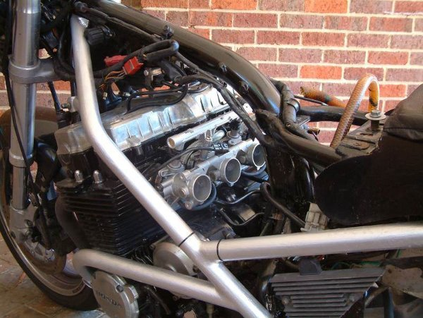
The throttle bodies mounted on the engine.
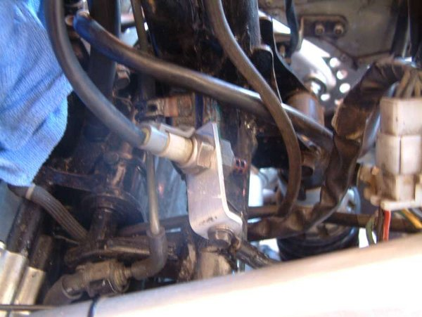
Air temperature sensor and mounting.
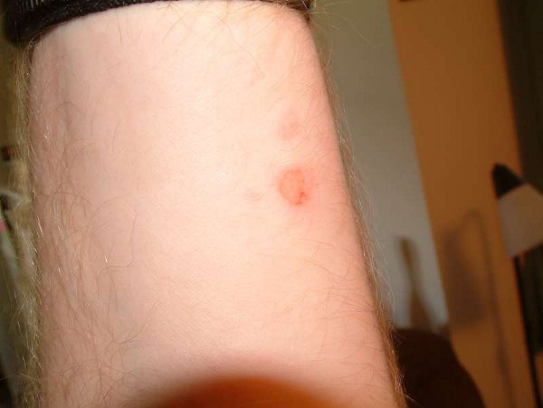
Hot soldering irons will burn you. As I found out.
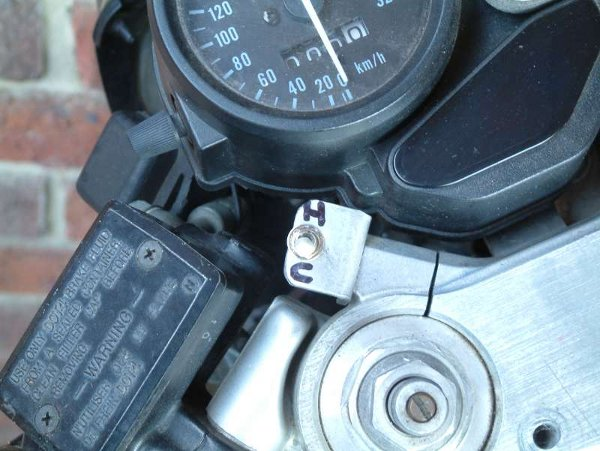
Ultra-high tech choke.
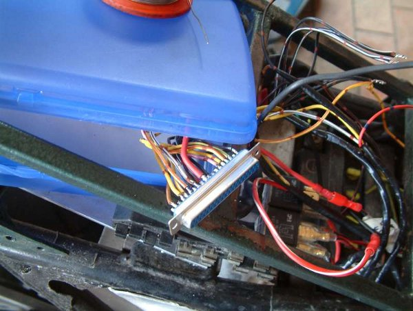
Spaghetti wiring.
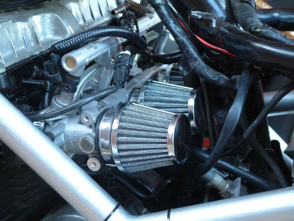
Snazzy looking pod filters.
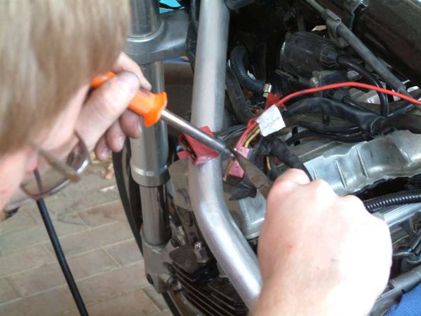
Viking hard at work soldering wires.
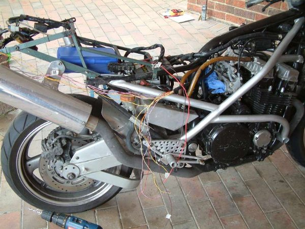
More spaghetti wiring, at the ECU end of the loom.
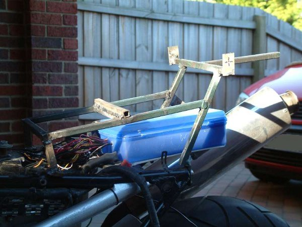
Subframe as it takes shape.
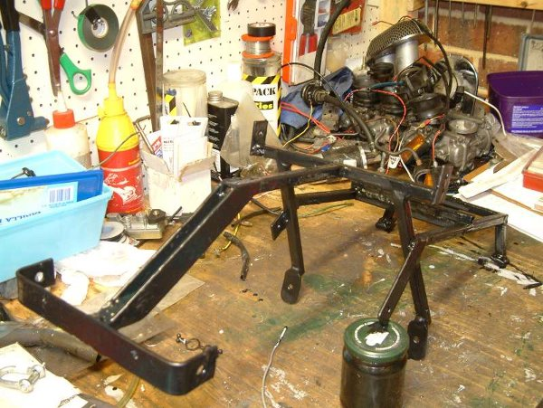
Completed subframe, after painting.
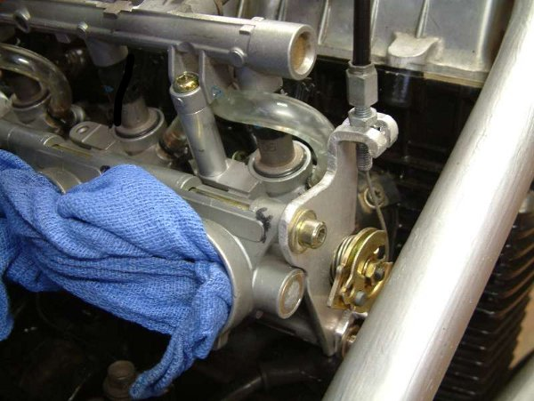
Throttle bodies and throttle cable clamp.
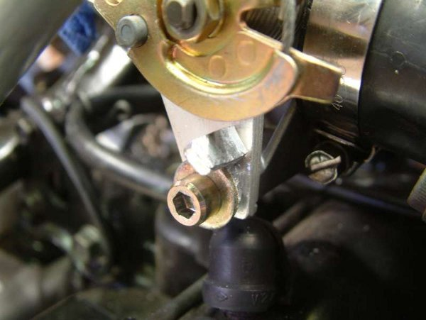
Throttle stop to prevent the throttle from opening too far.
A momentous day! The tank is off with Mick Bubb to get the fuel pump installed – that involves cutting and welding, and there’s no way I’m going to weld a petrol tank!
The pump is from a 2002 GSX-R750 (it only has one fuel level sensor, rather than the two sensors that earlier pumps had) and will drive the injectors perfectly.
I spent today pulling the carbs out, and installing the throttle bodies. From the photo below, you can see how tight a fit everything is inside the frame. From a distance, it looks just like a normal set of carbs. I had to make up my own throttle cable clamp, as the stock one was in completely the wrong orientation and position.
All I need to do now is get all the blasted wiring completed…
Things are starting to come together at last – I spent this evening in the shed fitting the inlet rubbers to the throttle bodies. I didn’t need to attack the rubbers with hole-saws, dremel tools or any other form of destruction.
I had been talking to Sharkey about how to get 39mm diameter rubbers onto 44mm diameter inlets, when he suggested that with sufficient heat, the rubber would soften enough to let me stretch them on. He suggested putting them in boiling water for a few minutes.
“What the hell..” I thought. So out came the camping butane stove and a metal tin to boil the things in. And it worked! Roughly 5 minutes of boiling softened the rubber enough that they went on without much trouble at all. What’s best is that the ‘lip’ inside the inlet rubber appears to have latched into the groove in the throttle bodies. I’m not courageous enough to pull the rubbers off and see what happens!
Fitting the rubbers seemed like a real anti-climax, so I thought I’d have a go at checking the spacing for mounting the rubbers onto the cylinder head.
Another victory! With a bit of pushing and pulling, I was able to get the inlet rubbers bolted onto the cylinder head. It’s a pain of a job doing up all the bolts, but it worked.
The cylinder head in the photos is a spare one that I have kicking around. Now that I know the inlet rubbers will bolt straight on, I’m tempted to get this head rebuilt properly – new valve guides, reseated valves, the works.
Then I wondered how much space I was going to have between the cylinder head the the rear frame tube, so it was out to the cold car port with a ruler. If I’ve measured everything right, there is a ton of space there. This is looking good!
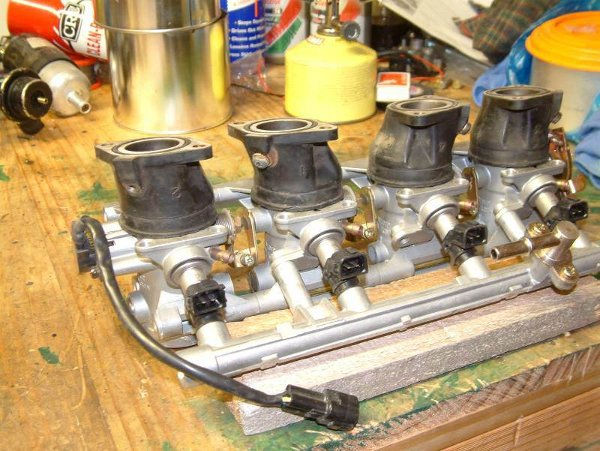
The four throttle bodies with the inlet rubbers in place.
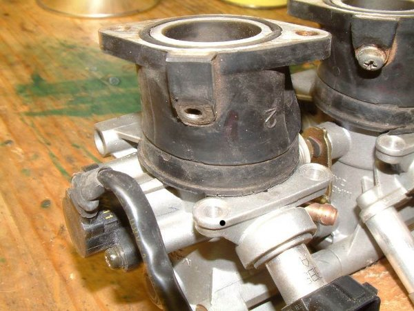
A close-up of the above picture, showing cylinder #1’s inlet rubber
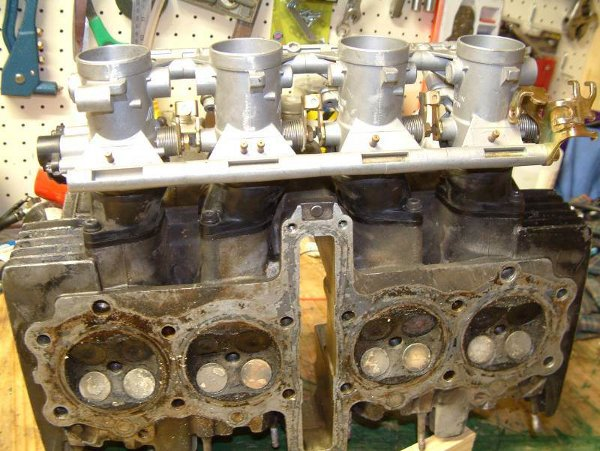
A complete setup – throttle bodies mounted to the cylindner head.
I got my old engine cases and cylinder head back from Sharkey last week. I’ve finally had a chance to experiment with the spacing of the intake rubbers. I can’t change the spacing of the GSX-R throttle bodies.
By changing the order of the intake rubbers to be 2-1-4-3 (instead of 1-2-3-4), I can get to within 1mm of the correct spacing. The only downside here? The throttle bodies have an external diameter of 44mm, but the rubbers have an internal diameter of 39mm. So I guess it’s time to find myself a 44mm hole-saw, or sit there for hours with a dremel tool or something…
Incidentally, I got all my bits back from Hadyn. After two years, he still hadn’t put together my plenum chamber and intake runners. Sorry, Hadyn, but that’s just not acceptable.
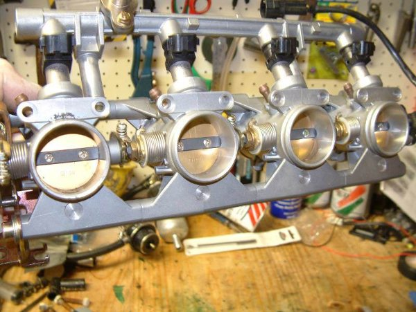
The 4 GSX-R throttle bodies, all very clean and shiny.
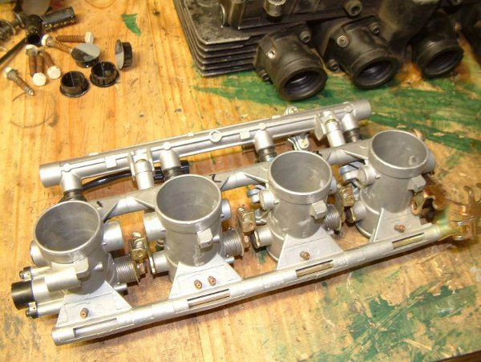
The new throttle bodies, showing where the secondary butterflies would go.

This is where the secondary butterflies would go. The holes in the throttle bodies have been filled with 2-part metal epoxy filler then filed smooth.
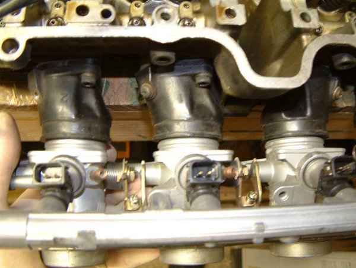
Looking good! The spacing between the inlet rubbers is a lot better than I had hoped for. A bit of work making the holes big enough for the throttle bodies to fit in, and I should be right.
The throttle bodies arrived on Friday. By Saturday night I had ripped out the secondary butterflies (controlled by the Suzuki ECU to improve low-RPM / low-speed air flow and engine response) and filled the holes left from their shaft.
Today I smoothed out the filler (a great 2-part metal putty that smells awful but goes rock solid) so that there is nothing to slow down the airflow through the throttle bodies.
I guess this means that I have to get into gear and start working on the wiring loom and working out where to hook up all the sensors… Of course, I still need to make up the mounting tray for my ECU, and getting a rear ‘hugger’ mudguard would be a very good idea, too!
More time has slipped past…
OK, the good news – I have finally picked up a set of GSX-R 600 throttle bodies from eBay. They’re currently on their way across the Pacific from California. I managed to find a good set – they had the injector wiring harness with them. Most sets of throttle bodies don’t come with the wiring harness.
Once they arrive, I’ll be looking at modifying the spacing between them, as the GSX-R has different inlet-port spacing to the CBX.
Next on the shopping list is a fuel pump to match.
I can’t believe that a year has slipped past, without any further progress on my EFI conversion. This is just appalling.
To very quickly re-cap what I’ve been doing over the past 12 months:
- I finished rebuilding my bike’s engine – it took longer than I expected
- Hadyn still hasn’t finished my manifold
- I have sold my old CBX 750 and got a modified CBX750, and it’s getting the EFI conversion
- I have gone away from the single throttle body design, and am looking at a 4-throttle body design. This will fit into the new bike much better than the old design.
A project redesign
Yep, I’ve gone away from the old design of one throttle body and a large plenum chamber. I’ve been looking around, and a set of throttle bodies from a Suzuki GSX-R will do the job much better. The Suzuki fuel pump is a beauty – internal to the fuel tank, in-built pressure regulator and return line, and has a fuel level sender integral to it.
So I’m now looking at finding the bits on eBay at a reasonable price. I’d prefer to buy them locally from a wreckers (so I can actually have a look at them before I buy them) but I guess eBay will be OK. They do come up with surprising regularity (once you get the right search terms!). The real killer is the cost of shipping them into Australia… :-(
On a related note, the new bike is currently getting a new exhaust system fitted, and it will have the EGO sensor installed from the start – so no need to go back and retro-fit the thing later.
I can’t beleive that it’s been over 8 months since I made any updates here…
There’s not a lot to report here, except that I’m still waiting on Hadyn to create the intake manifold for me, and SteveL is still working on the new fuel tank.
On the good side, however, I have got the MS working very well on the Stim, and have created a good looking VE map from my dyno run data.
On the bad side, my bike has eaten a big-end bearing. So the engine is in a million pieces all over my work bench, waiting for the new pieces to bring it back to life.
I spent this afternoon around at DaveJ’s house, looking at his MegaSquirt installation on his 1976 Ford Landau coupe. All I can say is that it is one beast of a car. (If you’re unfamiliar with the Landau, go and watch the film “Mad Max”, starring Mel Gibson. Max’s car is as close to a Landau as you’re going to get.)
We paid a visit to Hadyn, Dave’s machinist mate about building up my plenum chamber. We discussed a few details, and Hadyn will start building the plenum when he gets a free slot in his very busy schedule. So that’s one less thing I have to worry about.
About a month ago, I was having a chat with SteveL about the bigtank covnersion he is doing for me (although he’s just started a new job, so it’s taking up all of his time at the moment), and asked about the fuel return line for the EFI conversion. At this stage, we’ve decided that the best place for the return line is the rear of the tank, on the right-hand side. I’ll have to remember to ask him about adding some ‘walls’ around the fuel pick-up point to try and prevent the fuel moving around too much.
Two updates in two days must be some sort of record for me…
I spent today finishing the fibreglassing of the rear seat cowl – all I have to do now is sand and paint it. It’s going to look a bit rough, but I can always pass it off as being a prototype. Which it sort of is…
But doing fibreglass work when the ambient temperature is about 12 degrees C is a slow and painful job – the resin doesn’t want to set, so I ‘ve had to have the heater going for most of the day. In another day or two it should have set – then I can sand it smooth and paint it.
I have almost finished modifying the Daihatsu throttle body – I pulled or cut a lot of extraneous junk off it – air bleed pipes, fast-idle valves and the like. Most of the holes have been plugged with a two-part metal epoxy filler. (Cool stuff – knead the two pieces together, shape it, and within minutes it’s starting to go solid. Supposedly it’s fully cured in an hour. I found it was starting to set within 2 minutes, and rock solid after about 10 or 15.)
Oh, and Repco didn’t have either of the sensors. Is it just me and my local repco shop, or is Repco a bunch of useless gits when it comes to slightly out of the ordinary parts requests? I can’t see that an air temp. sensor and a coolant temp. sensor are that far out of the ordinary…
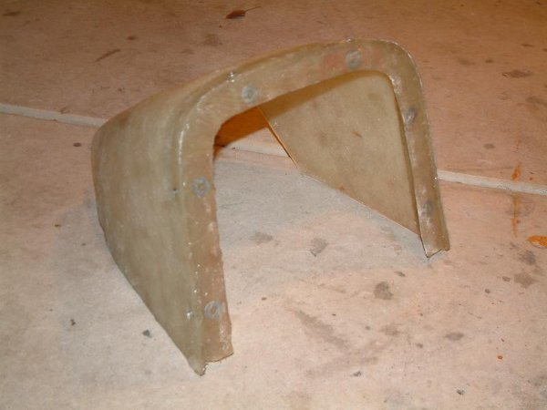
A shot of the rear cowling – the internal brace & mounting section is held in place with pop-rivets and lots of glass and resin.
Yes, it’s pretty rough. But for a first effort, I can’t complain all that much. I just wonder how many flaws will appear when I paint it…
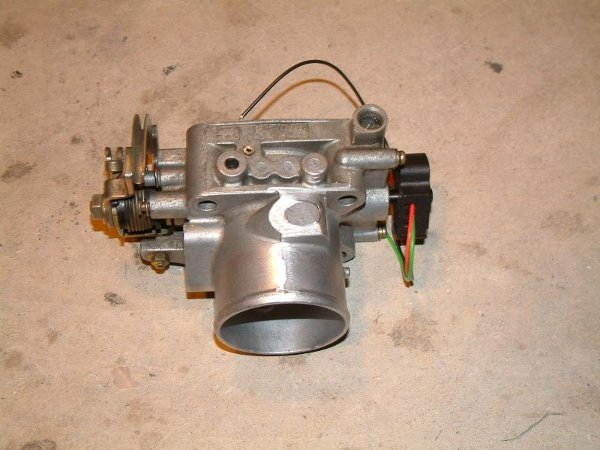
The modified Daihatsu throttle body. You can see where I’ve cut off some of the air lines and blocked the holes with metal putty. The black box at the right is a Spectrol Throttle Position Sensor, to replace the standard Daihatsu unit.
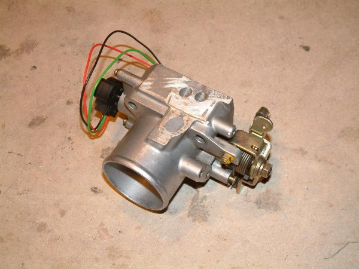
The underneath of the throttle body, showing yet another big hole filled with metal epoxy. The two smaller holes will be filled in at a later date.
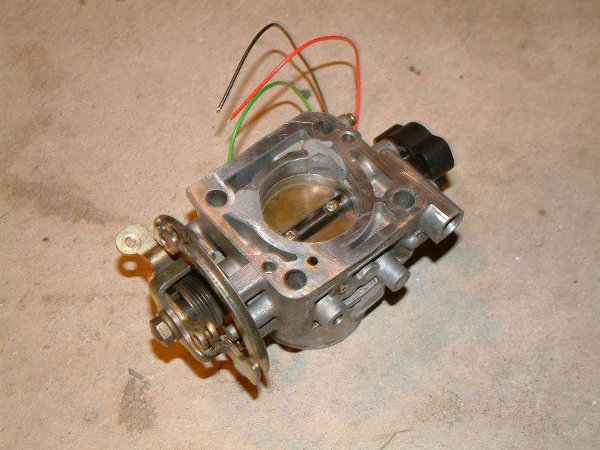
The side of the throttle body that attaches to the plenum chamber. The two small holes visible in the previous picture connect into that rectangular space visible beneath the TPS wires. It’s a bit hard to see here, but there are two large areas built up with metal epoxy.
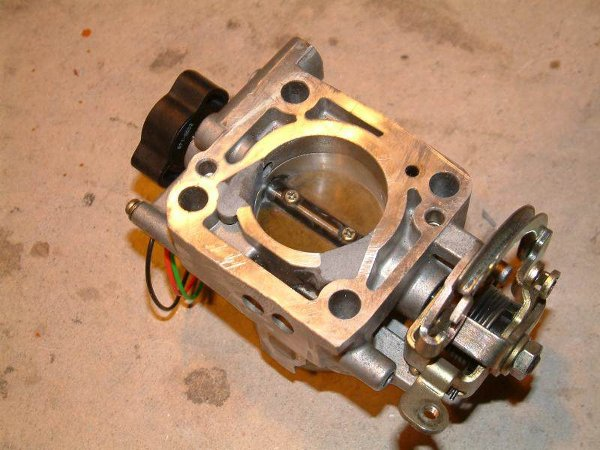
A better view of the two metal epoxy sections. These were smoothed down until they were flush with the throttle body. I have yet to fully smooth the round areas. You can also clearly see the two small holes that I haven’t filled yet, along with a small air vent pipe just above the ‘D’-shaped shaft that connects everything together.
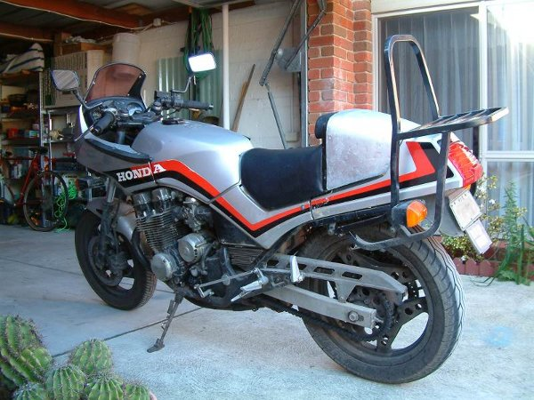
There you have it – the finished prototype cowl on the bike.
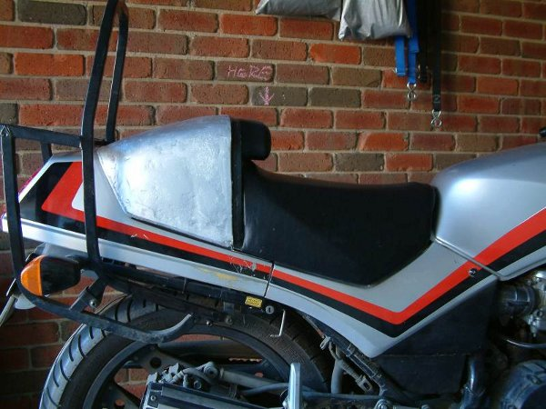
I think that this is the better looking side – the other side has a few blemishes in it.
Another couple of months without an update…
I have almost finished the fibreglass seat cowl – I have to ‘glue’ the pieces together, perhaps a coat of fine-weave cloth over the top, and then it will be ready to paint. Personally, I think it’s going to look a bit strange when compared to the standard bike. We’ll have to see.
On the mechanical and electrical sides, I haven’t gotten much further, although I’m now in a position to start making up the wiring look for all the EFI components.
The proper-style TPS arrived months back, I just have to make up a mounting bracket for it. (That won’t be too hard – I have some aluminium strip handy.) At the same time, I have started removing all the extraneous junk from the throttle body – I don’t need the air-bleed fast-idle solenoid (so that’s been removed), nor any of the air bleed lines and what-not. So they’ll all be chopped off, and any holes filled with a two-part metal epoxy filler putty.
On the plenum chamber side of things, a very helpful person (thanks DaveJ!) on the Oz_MS (Oz_MegaSquirt) mailing list has offered to have a look at my design, and has since passed it on to someone who can make it up for me. So, hopefully, I’ll have a made-up plenum and intake-runner set ready to bolt onto the bike fairly soon.
In case the MkI plenum is too big, I’ve laid down some initial designs and drawings for plenum MkII. This has a plenum capacity of 800cc (down from 1500cc), and intake runners tuned to take advantage of the Heimholtze (damn, I spelt that wrong again) Resonance and hopefully get some additional horsepower for free. :-)
I’ll be picking up some temperature sensors tomorrow – an air temp. unit from a Holden Camira (AC part number 1317), and a coolant temp. sensor (again, from a Camira, Bosch part number 130 026). I’ll mount the coolant sensor in the sump, as it’s mainly used to monitor engine temperature for the warm-up enrichments.
I realise that there is a huge lag between engine temperature and oil temperature. I’ll just have to live with it. (Anyway – I’ve never known what my oil temperatures have been for the past 9 years, so there’s no point in starting to worry now…)
More stuff on the shopping list includes the high-pressure fuel line to go between the fuel pump, the fuel-rail, and the return line.
On the fuel side, I’ve decided to stick with the stock fuel-tap, so that I have a reserve tank, as my fuel guage is a bit on the random side… To get the fuel back into the tank, I’ll modify the plate where the fuel guage sensor goes to include a hose-end and a nozzle to direct the fuel back into the tank. Hopefully, this will also reduce the effect of the fuel heating up as it passes through the pump / regulator and rail.
Not much to report, really. I’ve laid off on the intake plenum for the moment – although Rod has drawn it up in AutoCad for me. We’re still looking for someone who can make it up for me.
I have been busy with shaping the seat cowl, though. That’s almost ready to be used as a master for the fibreglass lay-up. I think a bit more sanding and shaping, and I should be about right.
Oh, and I’ve had to order a proper TPS (Throttle Position Sensor), as the one from the Daihatsu is not the correct type – I need one that is a potentiometer (variable resistance) type, not a 3 position micro-switch type.
Hmmm… I’ve been rather busy lately – chasing information about fibreglassing, measuring the old frame to see how large an intake plenum I can have, seeing where the throttle body and what-not can be mounted, painting part of the singel-seat conversion, and finally getting around to having a crack at generating a VE table to program into the MegaSquirt.
I have made a cardboard mock-up of the intake plenum chamber and runners, so that I can have a better understanding of how large it is, and to physically see how if will fit into the bike’s frame. I’m surprised at how compact it really is.
A few calculations show that the intake side of things (plenum chamber, intake runners and the rubber mounts that hold the runners to the cylinder head) will have a volume of just under 2 litres (or about 2.6 times engine capacity). The rule of thumb for small capacity, high-revving engines is to have an intake volume of between 1.5 and 3 times engine capacity. I expect that the final manifold will have a slightly smaller volume, as I haven’t taken into consideration the thickness of the material. (Yes, it will be a puny difference, but I’m mentioning it for completeness.)
All I have to do now is to make some detailed drawings of all the individual pieces, then take them and the model to a small engineering firm around the corner to see if he’s able to make it up for me.
As for generating the VE table, one of the Megasquirt people wrote a program that can generate a VE table from the output of a dyno graph. But working backwards from the torque curve, a fairly good starting point can be gained.
The table I ended up with doesn’t quite look like I expected it to, but then, I don’t really know what to expect anyway…
Also on the programming side, it looks like I might have to forget about using the default Speed-Density mode of the ‘Squirt and use Alpha-N mode instead. It appears that for engines with a fairly wild cam (and I think that bikes have a fairly wild cam when compared to a car) with a long overlap, the SD method is not the best. There is also the problem of ‘off-idle’ (that point where the throttle is just opening) where Alpha-N appears better than SD. But we’ll wait and see – I expect that just getting the thing running with SD will be a big enough achievement.
A few pictures of the work so far…
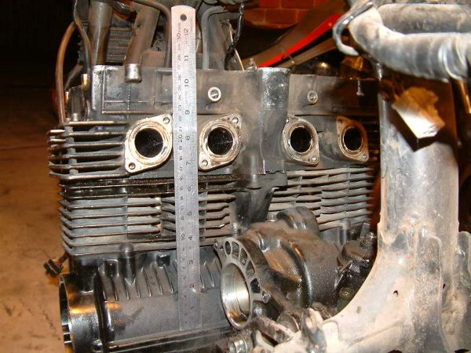
Rear view of engine in frame To give you an idea of how compact it all is, a shot of the rear of the engine. The ruler is to show you the scale. Note that the alternator will take up about 4 inches (100mm) of space where the ruler is.

The Daihatsu plenum chamber, with the cool ‘EFI’ logo cast into it. It’s about the right size, but all the angles are wrong, so it’s effectively useless.
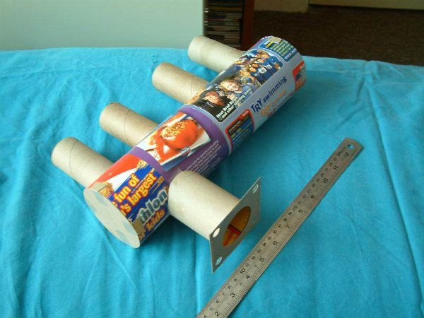
The cardboard mock-up of the plenum chamber, intake runners, and throttle body mounting plate. Maybe I should have put the printed side on the inside…
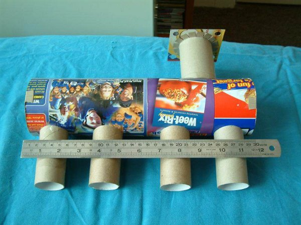
The cardboard mock-up of the plenum chamber, intake runners, and throttle body mounting plate.
I have been very lazy here – too many other things to do, and not enough time to devote to my projects…
Following on from my purchase of the Daihatsu pieces, I have generated a temperature curve for the air inlet temperature sensor, purchased a Narrow-Band EGO (Exhaust Gas Oxygen) sensor, and started making arrangements to get all the intake side put together.
Going by some measurements I took the other night, the Daihatsu intake manifold will not be any use to me at all – I’ll have to make up an entire plenum assembly with all the runners. Thankully, that will not be too difficult, as it’s going to be made from mild steel.
With regards to the injectors, I was able to find their flow capacity, so I know have an idea of how big they are, but I still don’t know what pressure the fuel pressure regulator is set to…
How can I sum up the project so far? Slow and steady.
I have bought some EFI parts from a local Daihatsu wrecker – an inline fuel pump from a Feroza, along with a complete intake manifold (throttle body, plenum and runners, injectors, fuel rail, fuel pressure regulator, and throttle position sensor). All I have to do now is to find out the flow rate of the injectors, and what pressure the pressure regulator allows through.
The MegaSquirt is now finished – I bought some tube for the MAP sensor, trimmed the circuit board so that it fits into the case, organised a ‘break-out’ connector for the MAP sensor (so that I don’t have to have a length of tube waving around), and put it together. I suppose I should take a few photos, but the outside is a rather boring silver box…
The megasquirt has been almost assembled – I just need to find a suitable air-hose adaptor for the MAP sensor, and I can then bolt the case together. The circuit board is about 0.5mm too long for the case, so I’ll have to carefully file it back to the proper size. Also, the 9-pin connector stuck out about 2.5mm past the end of the circuit board. So I dug up an old 9-pin connector that I had lying around, and used a flying lead from the MS board to the 9-pin. It doesn’t look very pretty, but it works.
It was pretty exciting to have the ‘squirt running on the desk, with the MegaStim plugged into it, and watch the numbers change on the screen change as I fiddled with the controls on the ‘Stim.
Did I mention the software? It’s all Windoze based, and you set up and program the ‘squirt through it. It has full datalogging capabilities, and a run-time monitor so that you can see what it’s doing at any given instant. The original ‘PCC’ (PC Configurator) program was written by Bruce and Al, but recently Erik has released ‘MegaTune’ (an enhanced version of the PCC). You can get the PCC from the MS home page, and MegaTune from the Yahoo area. (See above for the URLs.)
Getting back the the EFI332 project for a moment, Jeff has his Corvette running beautifully. Bruce has taken it for a spin, and is very impressed with it’s increased power, smooth power delivery, and engine management. About the only thing Jeff is having trouble with is the IAC (Idle Air Control) which controls the idle speed of the car. Given that the original manufacturer spent millions of dollars getting it right, Jeff’s achievement is even more astounding.
Woohoo!! It’s arrived! My megasquirt has been delivered! What can I say? It’s a box of electrical components, a couple of circuit boards, and a sturdy looking aluminium case to put it all in.
So, all I have to do is put it together… :-)
On the EFI332 front, there has been a bit of progress from other people, so that has inspired me to put together a virtual PC with VMWare to run the DOS-based developement / debugging tools with. With luck, I might not even need the MS-DOS virtual machine, and I can use my Win98 virtual machine.
I’ve been a bit slack lately – I sent off the money for a MegaSquirt kit back in December, and one of Jeff’s MegaStim boards (the equivalent of the ‘Stimulator’ for the ‘squirt). According to Bruce and Al, most of the parts have arrived, and they are starting to ship the kits out. At a rate of 50 kits per week, they estimate it will take 6 to 8 weeks to get all the kits out.
The website for the ‘squirt is here: http://www.bgsoflex.com/megasquirt.html, and there is also a Yahoo! group discussion forum thingy at http://groups.yahoo.com/groups/megasquirt.
I mentioned Bruce and Al’s new ‘MegaSquirt’ earlier. As it comes pretty well pre-programmed, and almost ready to run, I have decided to pursue this path in the immediate future, and use it as a learning exercise. What I learn with ‘MegaSquirt’ will be useful with developing the ’332 board.
But that doesn’t mean that I’m bailing out of ’332 development totally. I’ll still help Jeff with his code development, and Dave with getting his buggy going.
Actually, Jeff has managed to get his car running with the ’332 board and his code base. About all it can do right now is idle, but he’s working on improving that and getting his sensor data sorted out. One of his niftier pieces of code is the serial monitor that allows for full data capture and can even replay the captured data so that he can see exactly what’s going on. Well done!!
Hmmm… I have been a bit slack here. :-(
Anyway, I have fixed my communications problem – it looks like I fried one or more of the ICs on the BDM board when I built it. I have replaced all the ICs on it, and it works perfectly.
And now the next hurdle appears – I can download code to the board, and inspect the CPU’s registers and stuff, but I can’t seem to get my code to run. It looks like it’s ignoring my code and running the test code that Charles programmed into the Flash RAM when he built the board. So my next step is to figure out how to either erase the Flash RAM, or work out where my code is being loaded and set the CPU to execute from there.
And in the meantime, Bruce and Al (the original designers of the EFI332 system) have brought out a cut-down version named ‘MegaSquirt’. It does everything the ’332 does, but in a simpler design, complete with Windows-based setup and tuning software. Now if only the ’332 was that easy!
I met up with Jeff Clarke, one of the main code writers behind the EFI332 4-layer board, and we had a great talk about all the EFI stuff. I didn’t get a chance to talk to Bruce Bowling (the guy who helped design the EFI332 CPU board) face to face, but we had a couple of lengthy talks on the phone.
I now have all the silicon needed to build my second CPU board (apart from the Flash RAM, but that’s pretty hard to find anytime). All I need is to get my act together and start building stuff.
Of course, I also have to find out where my problem lies with my current complete board, as none of the things I try seem to indicate communication between it and my PC.
Well, I finally have the rebuilt cylinder head back from the experts, and it’s beautiful! I had to clean the last of the grinding paste out of the ports and off the valve seats, but that’s a small price to pay for such excellent work.
On the EFI side, I have determined that my bench power supply doesn’t work. I found a power pack that gives 12v, and the voltage regulator on the EFI board gets hot now. Of course, life is never easy, and I still can’t get my development environment to talk to the board via the BDM modules. I think that I may have buggered up some of the ICs when I built the BDM board. Luckily, I used IC sockets, so it’s merely a matter of heading off to the local electronics shop and grabbing some more.
I’m getting the chance to meet up with some fellow EFI332 enthusiasts! Work is sending me to America to attend the 2001 SANS conference in Baltimore. Two of the major EFI332 players live near there, so we’re going to organise a get-together to chat and swap idea.
Not a lot to report here. I had to chase up some new valve guides for the new head. That delayed things by about 3 weeks, as they had to come from Japan.
My CPU boards arrived between Christmas and New Year’s!! Woohoo!! The driver boards are well on their way to being ready, and I bought myself a bench power supply to power it all whilst I test and debug it in the comfort of my work area.
I’m slowly getting stuck into the coding (and there is a lot! to learn), but for now I’m working on a Unix port of the MS-DOS monitoring program.
As for the cylinder head, I dropped it off for a specialist to have a look at, and he reported that there wasn’t enough metal left in the valve seats to grind them back! So I had to chase up another CBX750 cylinder head. Luckily, Mr_T (Team RC17 #1) had one sitting in his garage, so it was a simple matter of him bringing it over here, and then me dropping it off to the cylinder head expert. With luck, this one will be fine!
Charles, the guy doing the CPU board buy, has had to pull out, leaving quite a few of us hanging in the air. The buy has been passed over to another member of the EFI332 team, and he is currently sorting out what needs to be done to get everything finished. He has stated that people who want their boards built for them will end up waiting, but those who want their stuff now will get everything before the end of the year.
Also, I have put my name down for a driver board that can handle all the injectors and all the coils. If I was so inclined, I could build the driver board to handle 8 injectors and 8 coils, but for the CBX, I only need 4 of each.
Once I get the CPU board and driver board, it’s time to start playing with code and the stimulator board to get a working system together. I have a funny feeling that getting the code working will take longer than everything else.
The CPU board still hasn’t arrived – the poor fellow putting them together has been having some problems with home and work. With luck, he will have finished moving house by now, and can get on with building my CPU board!
There is a possibility of getting a ‘Driver’ board as well. The driver board is the one that actually triggers the injectors (and the coils, if you have elected to have the CPU run the ignition as well), so you need one of these before you can do anything.
I picked up a cylinder head and cylinders (with a full set of pistons!) from a wrecker last Christmas, and have been slowly rebuilding them. I have reached the stage where I need to remove the old valve guides, and get the valve seats ground, then reface the valves. I’ll see about getting the ports worked on (not a lot) to get that fraction more power.
The EFI332 group buys are proceeding well. The CPU boards are starting to ship, and I just have to be patient. The ‘stimboard’ has arrived, and I spent an evening soldering it all together.
There has been a fair bit of discussion on the EFI332 mailing list about what sort of enclosure to put the CPU into, and what sort of driver board the project is going to use. Given that most of the EFI332 people are going to be using their CPUs in cars, I might have to make my own enclosure.
I have done some calculations, and have worked out roughly what size injectors I will need, and have an idea of what sort of injector pulse width I will be dealing with (at the worst-case). The pulse width seems a bit big to me (especially with the injector size I am using for the calculations), but we’ll see how it goes.
The group buy for the ‘stimulator’ has closed, and I have one of them on order.
The ‘stimulator’ is a small circuit board that will connect to the CPU board, and provide a false set of signals from the various sensors. This will allow us to develop and test our code (and fuel / spark maps) without having to worry about blowing up an engine.
Hmmm… it has been a long time since I updated this page…
The EFI332 group has developed a new CPU board that incorporates the existing CPU board and I/O boards into one unit. I have one of these on order (fully assembled and tested), along with the EFI-CPU to PC connector. I expect delivery sometime in April, 2000.
I have a contact who can help with the fabrication of the intake manifold, throttle body and intake tracts. I still haven’t sourced any of the bits, but there are plenty of car wreckers around here, and picking up the bits from a wrecked car (eg: Holden Camira, Mazda, or Hyundai) shouldn’t be too difficult.
To house the EFI-CPU, I am going to convert the bike into a single seat, and mount the computer in the area where the pillion seat would have been.
This is a bit of a dream, I guess. But I’ve been looking around for a while, trying to see if it’s possible to convert a bike from carburetors to Electronic Fuel Injection.
There are a few suppliers of ready-made EFI equipment, but I’d really want to do far more homework before I go splashing out on what might be an expensive mistake. (The general price range of ready-made EFI equipment is around the AUS $2000 range for a full kit that would suit my requirements.)
A place you might want to visit is the Diy_EFI project team. The Diy_EFI / EFI-332 projects are aimed at the ‘Do It Yourself’ person, and if you don’t have experience with soldering circuit boards and programming then you’re probably wise to give it a miss.
Since I last edited this page, I’ve been doing a fair bit of research into this area. What have I found? Yes, it would be possible to convert a bike from carbs to EFI.
The major limiting factor is the amount of space under the tank for mounting all the injector gear, throttle body and sensors. Another factor is the amount of electronic interference created by the bike’s ignition system – I would have to mount the Electronic Control Unit (ECU) somewhere in the duck-tail, and have all the cables shielded.
Fuel supply is a major problem – for effective EFI, you need to have a fuel pressure of between 30 and 40 psi – most bike fuel pumps (eg: from the CBR600) don’t provide enough pressure, and gravity flow gives less than 5psi. Another problem is the size of the fuel pump – most are too big to be mounted on a bike.
My idea is to use the fuel pump and injector setup from a wrecked BMW K-series bike. The BMW K-series bikes have been using EFI for over a decade, so any problems will have been worked out by now. I feel that I could also take most of the sensors from the BMW and adapt it to suit the DIY_EFI control system.
As for injector firing, it doesn’t really matter about when you fire the injector, as studies have shown that (strangely enough!) you get best performance if you fire the injector during the cylinder’s exhaust stroke. Strange, I know. Also, there isn’t much difference between sequential firing (one injector at a time) or bank firing (all injectors at once). I have decided that I would fire a pair of injectors at a time. Although, if the software allows it, I could manage sequential injector firing.
Timing signals would be provided by a Hall-effect sensor mounted on the end of the crankshaft, and supplemented by a feed from the ignition system. At this stage, I intend that the bike’s stock ignition system would be used.
Speaking of time, at maximum rpm, the RC17 takes only 3 milliseconds to complete a full stroke of the piston from BDC (Bottom Dead Centre) to TDC (Top Dead Centre). As most injectors have a turn-on time of 1-2 milliseconds, I would have only 1 millisecond to fire the correct amount of fuel into the cylinder. An impossible task.
But it’s not that bad – because we’re dealing with a 4-stroke engine, we only fire the injector every 2 engine revolutions, so we actually have 12 milliseconds (4 strokes * 3ms) to inject the required amount of fuel. No problem.
There are other things to consider, such as air-flow through the air box and into the throttle body, and the design of the actual air-box to throttle body to cylinder plumbing, as well as all the sensors that an EFI setup requires.
As I said before, I do feel that it’s possible to convert a bike to EFI, and I feel that the number of new bikes on the market with factory-EFI (eg the 1999 Suzuki GSX-R750, the Honda VFR800 / CBR1100XX) proves that it is possible.
Currently, I have put the project on the back-burner because Real-Life ™ has intruded, but I will be looking at it again when time allows me to.
Another thing to put a damper on my project is the fact that I can get a DynoJet stage 1 kit and a K&N stage 1 filter kit for the RC17. Together, they would provide the same boost in power but for a lot less money and an infinitely smaller amount of work. Add to this equation the Moriwaki exhaust system, and you have a pretty good setup.